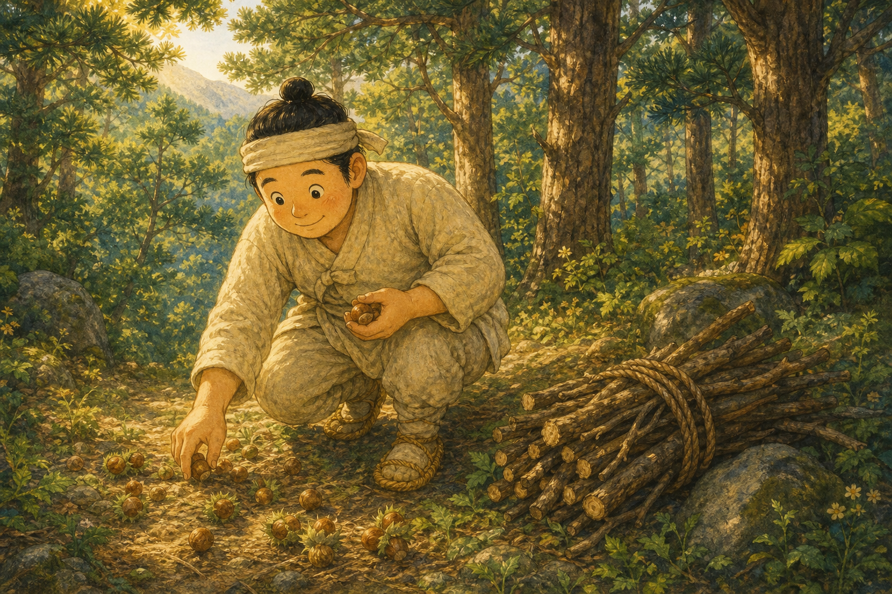
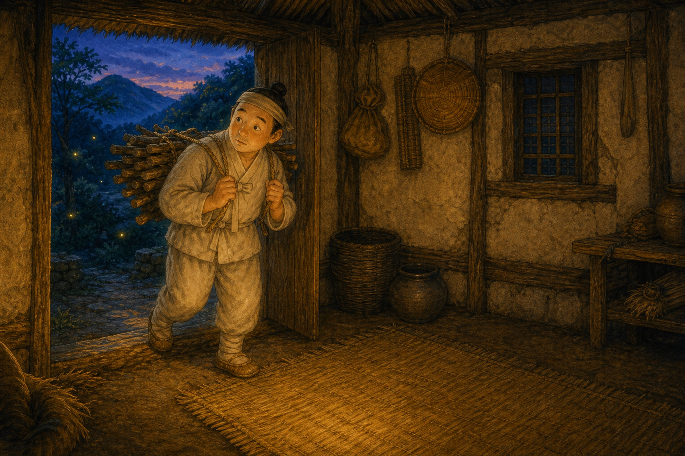
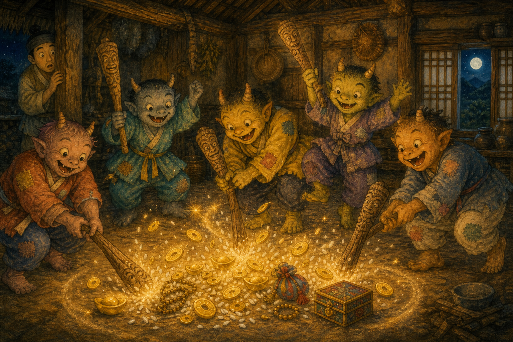
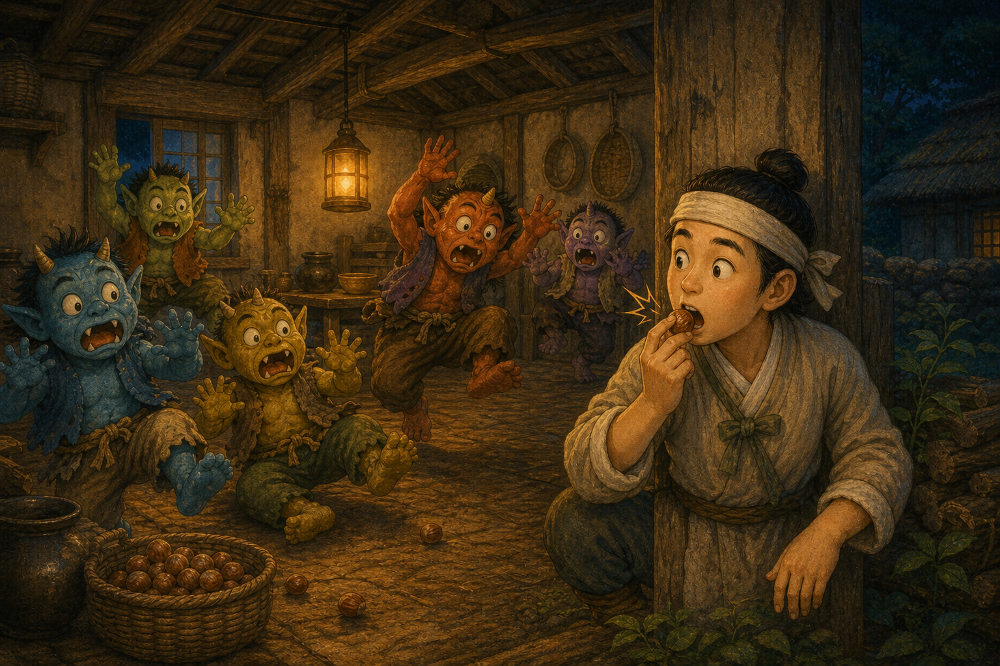
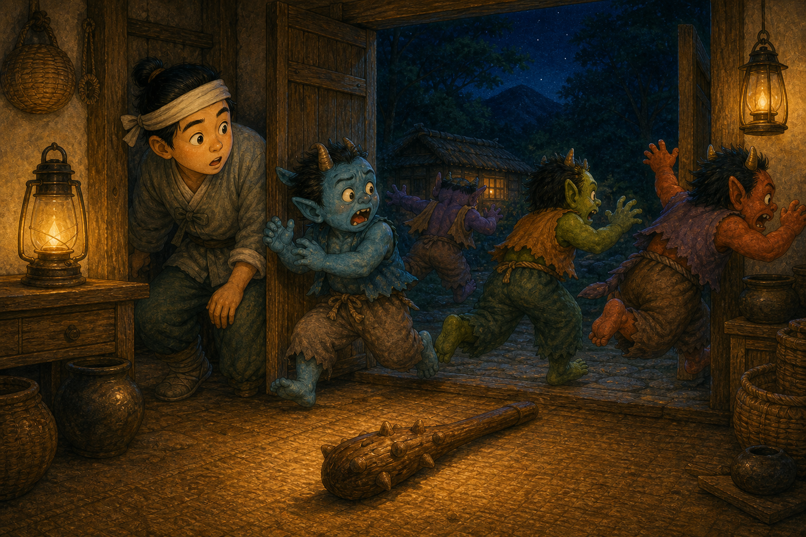
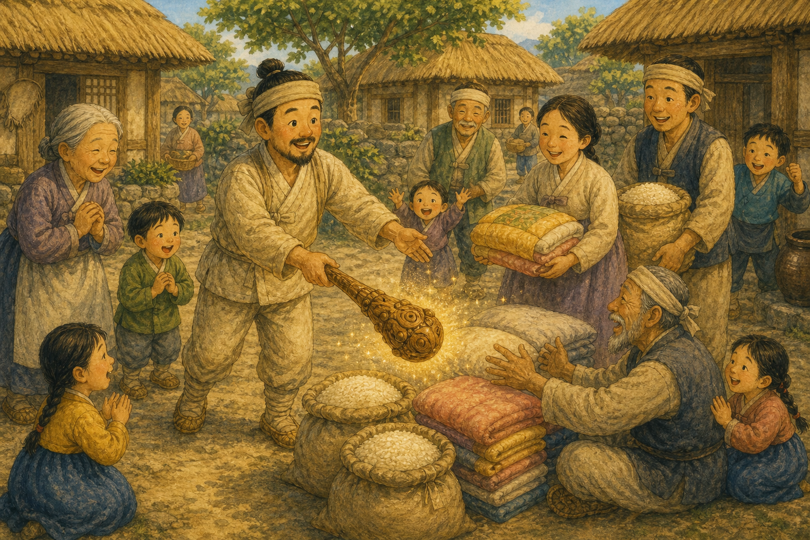
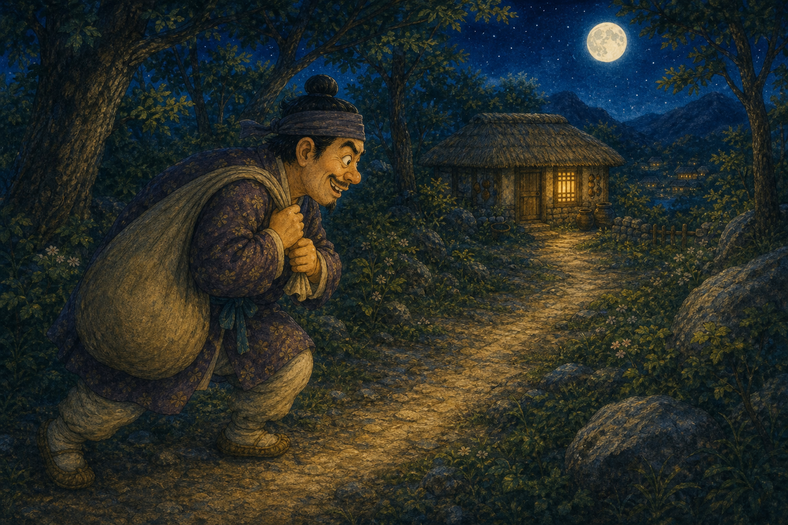
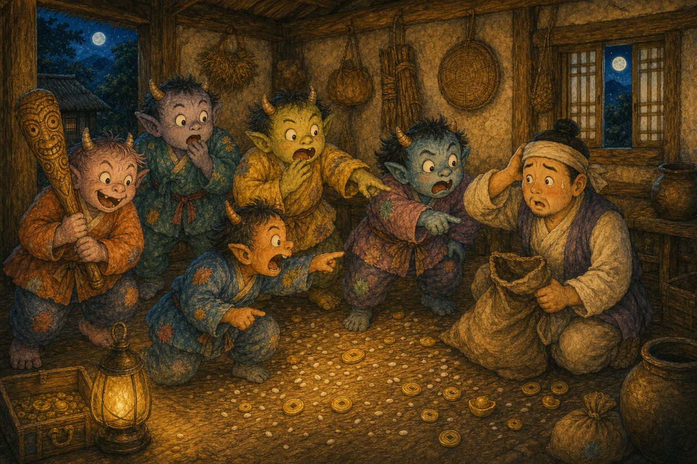
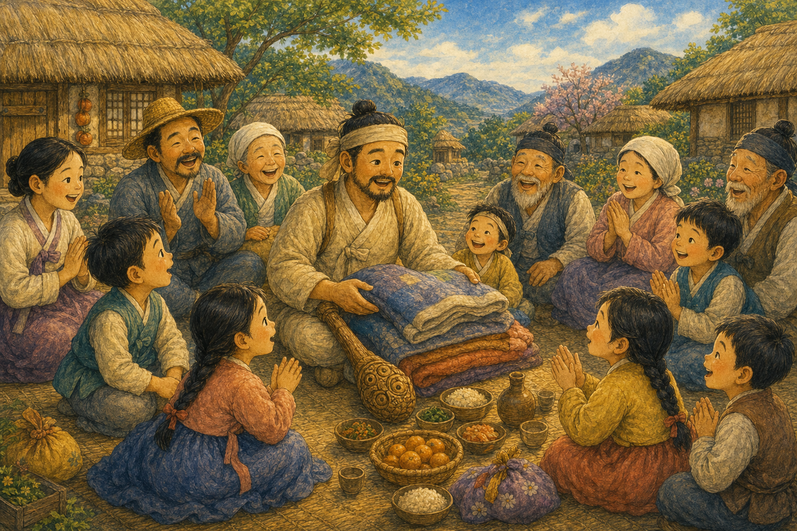

착한 나무꾼
옛날 깊은 산에 마음씨 착한 나무꾼이 살았어요. 나무를 하다 떨어진 개암을 하나둘 주웠지요.
"이건 부모님 드려야지, 이건 아이 주고."

옛날 깊은 산에 마음씨 착한 나무꾼이 살았어요. 나무를 하다 떨어진 개암을 하나둘 주웠지요.
"이건 부모님 드려야지, 이건 아이 주고."

날이 저물자 나무꾼은 산속 빈집으로 들어가 쉬었어요. 곧 밖에서 무언가 두런두런 소리가 들렸지요.
"누가 오는 걸까?"

빈집에 도깨비들이 몰려와 방망이를 두드렸어요. "금 나와라 뚝딱!" 하자 정말 금이 쏟아졌지요.
"우와, 방망이에서 보물이 나오네!"

숨어 있던 나무꾼이 그만 개암을 딱 깨물었어요. 큰 소리에 도깨비들이 집이 무너지는 줄 알고 놀랐지요.
"으악, 집이 무너진다!"

도깨비들은 방망이를 두고 허둥지둥 달아났어요. 빈집에는 도깨비 방망이만 덩그러니 남았지요.
"방망이가 그대로 남았네."
나무꾼은 방망이를 들고 조심조심 집으로 돌아왔어요. 하지만 욕심내지 않고 꼭 필요한 만큼만 쓰기로 했지요.
"필요한 만큼만 빌려야지."

나무꾼은 방망이로 쌀과 이불을 만들어 가난한 이웃과 나눴어요. 마을에 따뜻한 웃음이 번졌지요.
"같이 나누니 더 기쁘구나!"

이를 본 욕심 많은 이웃이 일부러 빈집을 찾아갔어요. 방망이를 통째로 가지려는 마음뿐이었지요.
"나도 보물을 잔뜩 가질 테야!"

이번엔 도깨비들이 속지 않고 거짓을 알아챘어요. 욕심부린 이웃은 보물 대신 빈손으로 돌아갔지요.
"거짓으로는 보물을 얻을 수 없어."

착한 나무꾼은 정직하고 나누는 마음 덕분에 복을 받았어요. 진짜 보물은 욕심이 아니라 따뜻한 마음이랍니다.
"정직하면 복이 찾아온대!"